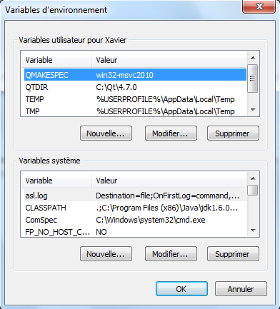
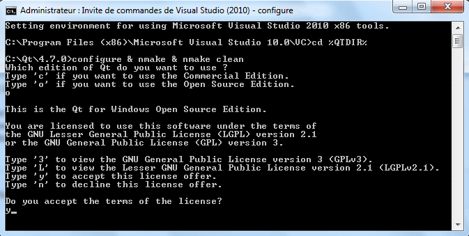
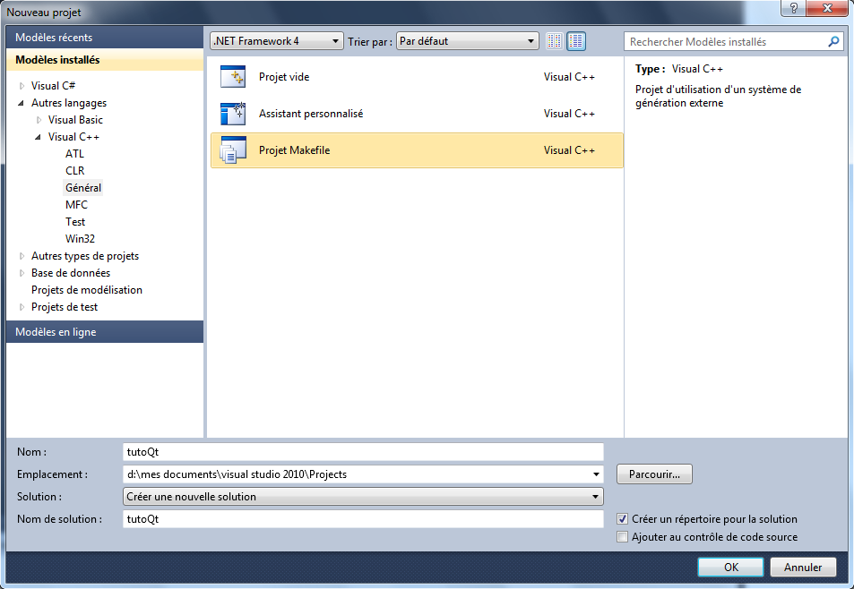
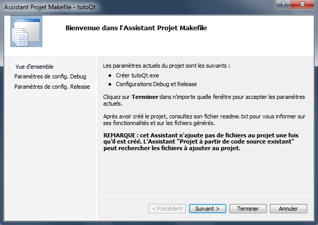
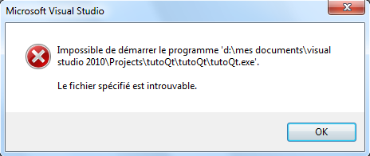
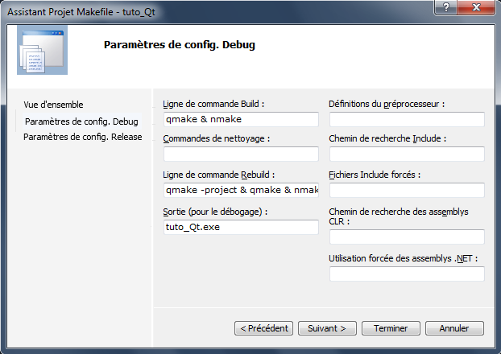
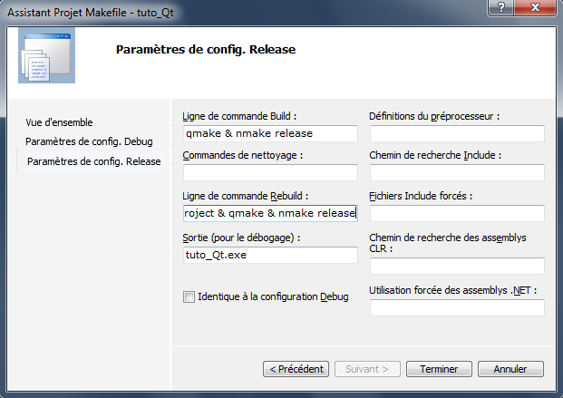
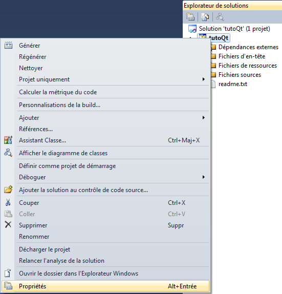
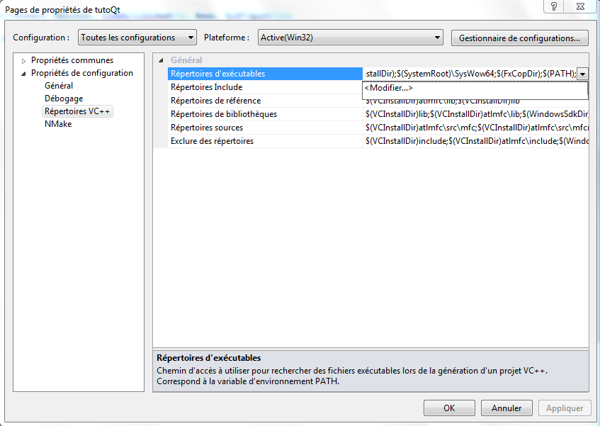
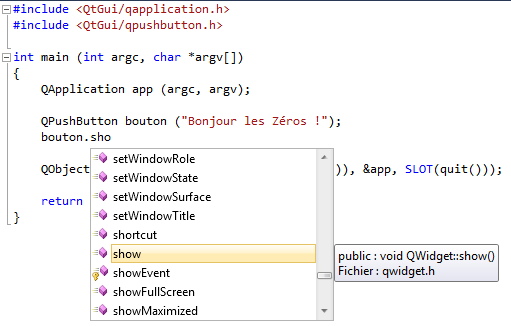

Qui a déjà utilisé Visual Studio pour programmer ? Et qui a été contraint de le quitter pour un autre IDE quand vous vouliez vous mettre à Qt ?
En effet, jusqu'à la version 4.3.1, Qt était (officiellement) seulement compatible avec le compilateur MinGW. Depuis la version 4.3.2, Trolltech a officialisé la compatibilité avec Visual Studio et son compilateur.
Depuis que Nokia à racheté Trolltech, ils ont développé un plugin pour Visual Studio permettant d'utiliser très simplement l'IDE de Microsoft.
L'utilisation de Visual Studio implique également que les sources de Qt soient compilées avec le compilateur de Visual. Dans sa grande générosité, Nokia fournit ces sources compilées avec Visual Studio 2008.
Leur plugin, Visual Studio Add-in, est lui aussi seulement compatible avec les versions 2005 et 2008 de l'IDE.
Malheureusement, pour utiliser Visual Studio dans sa version 2010, il faut effectuer cette compilation manuellement et faire toute la configuration de l'IDE.
C'est ce que je vous propose de vous apprendre au travers de ce tutoriel.
Bien, avant de pouvoir compiler Qt, il faut d'abord télécharger les sources.
Ça se passe sur le site de Nokia, et plus précisément ici. Il faut se rendre dans l'onglet "LGPL". Comme nous voulons seulement les sources, il faut sélectionner "Qt libraries 4.7.0 for Windows" (MinGW 4.4 ou VS 2008, c'est au choix). Sur la page suivante, le téléchargement automatique va se lancer. Annulez-le. En effet, ce téléchargement est en fait les sources déjà compilés. Sur cette page, il y a marqué "Source code available on this link:". C'est cette archive qu'il faut télécharger (environ 230 Mo).
Je pense que vous avez deviné qu'on va utiliser la version gratuite de Visual C++, nommée Visual C++ 2010 Express. Vous pouvez la télécharger sur le site de Microsoft.
Pour l'installation de Visual C++, si jamais ça n'est pas encore fait, c'est très simple. Le petit installateur que vous avez téléchargé depuis le site de Microsoft va en fait se connecter sur leurs serveurs pour télécharger les fichiers qu'ils faut. Veillez donc à rester connecté à internet ;) .
Pour Qt, il suffit de décompresser le contenu du dossier "qt-everywhere-opensource-src-4.7.0" de l'archive. L'endroit où se trouve le contenu décompressée sur le disque n'a aucune importance. Personnellement, je les aient mis dans C:\Qt\4.7.0.
Pendant cette décompression, on va créer quelques variables d'environnement pour la compilation.
Sous Vista / 7
Allez dans Panneau de configuration -> Système -> Paramètres système avancés -> onglet Paramètres système avancés. Cliquez sur Variables d'environnement.
Sous XP
Allez dans Panneau de configuration -> Système -> onglet Avancé. Cliquez sur Variables d'environnement.
Dans la partie supérieure de la fenêtre, on va créer deux nouvelles variables. Cliquez sur Nouvelle.... Dans Nom de la variable rentrez QMAKESPEC, et dans Valeur de la variable mettez win32-msvc2010.
Cette variable va indiquer à qmake quel compilateur utiliser, pour créer les bons makefile.
Rebelote pour la deuxième variable qui a pour nom QTDIR et pour valeur le chemin d'installation de Qt. Par défaut, c'est C:\Qt\4.7.0. Cette variable est nécessaire au compilateur pour savoir où chercher les fichiers sources.
Vous devriez donc avoir ça pour le moment :

Bien : maintenant, il faut éditer une variable système déjà existante : la variable path. Elle se trouve dans le cadre en bas de la fenêtre. Sélectionnez-la et cliquez sur Modifier.... À la fin de cette variable, rajoutez ;%QTDIR%\bin\.
On a fait cela pour pouvoir utiliser les différentes commandes de Qt (qmake, uic, ...) en ligne de commande sans avoir à aller dans le dossier contenant les exécutables.
Pour être sûr que ces modifications des variables d'environnement sont bien pris en compte, ouvrez la console de Windows (démarrer -> Accessoires -> Invite de commandes) et tapez echo %QTDIR% puis echo %QMAKESPEC% et enfin echo %path% : vous devriez lire ce que vous avez entré précédemment.
Si ce n'est pas le cas, redémarrez votre ordinateur et revérifier.
Bien : passons maintenant à la compilation des sources.
Pour la compilation, ça se passe dans la console avec 3 petites commandes. Elles sont très vite tapées, mais sont extrêmement longues à se terminer.
Ces trois commandes sont : configure, nmake et nmake clean.
La première, configure, sert à préparer le terrain à la compilation. Cette commande peut mettre de 10 à 30 minutes pour se terminer. C'est avec cette commande qu'on peut spécifier le compilateur à utiliser avec l'option -platform (nous on l'a fait avec la variable d'environnement QMAKESPEC, qui est utilisée par défaut) ainsi que le mode de compilation : en debug ou en release. Nous, on va compiler en debug. En effet, si on compile en release, on ne peux pas débugger notre programme...
La seconde, nmake lance la compilation proprement dite. Tous les fichiers sont ainsi compilés avec le compilateur de Visual Studio. C'est durant cette opération que qmake, Qt Designer et les autres les autres logiciels habituellement fournis sont compilés. C'est la phase la plus longue : de 2 à 4 heures.
Enfin, la dernière commande, nmake clean sert à supprimer tous les fichiers générés lors de la compilation, et il y en a un paquet : pas moins de 3 giga-octets :o ! Elle dure environ 10 à 20 minutes.
Maintenant, on va lancer ces 3 commandes, mais d'abord, il faut lancer la console de Visual Studio : démarrer -> Visual Studio 2010 Express -> Invite de commandes de Visual Studio (2010) et se rendre dans le répertoire où se trouvent les sources avec la commande cd. Pour y aller, on va utiliser notre variable d'environnement QTDIR. La commande à taper est cd %QTDIR%. Pour lancer la compilation, tapez : configure & nmake & nmake clean. Cela lancera les 3 commandes successivement après avoir demandé le type de licence à utiliser. Dans notre cas, c'est la licence gratuite. Ensuite, il faut bien évidement accepter cette licence. Après cela, il n'y a plus aucune intervention de votre part.
Vous devriez avoir ceci maintenant :

Maintenant, vous pouvez aller au cinéma, à la piscine, voire même aux deux, ou bien regarder défiler tous les fichiers en train d'être compilés...
Si vous avez choisit de regarder défiler les fichiers, vous vous apercevrez que parfois il y a des warning. Ne vous en occupez pas.
4 heures plus tard...
Maintenant que la compilation est terminée, on peut passer à la configuration de l'IDE (en fait, il n'y a pas besoin d'attendre la fin de la compilation ;) ).
Nous voilà maintenant dans la partie de configuration. L'ennui c'est qu'il faudra faire ce qui va suivre pour chaque nouveau projet. Heureusement, ça ne prend pas plus de deux minutes.
Création d'un projet
Tout d'abord, il faut créer un nouveau projet, mais pas de projet "Console" comme vous en aviez l'habitude. Maintenant, il faut créer un projet "Makefile". Dans l'assistant de création de projets, cliquez sur Général et choisissez Projet Makefile.

Entrez un nom pour le projet et cliquez sur OK. Une nouvelle fenêtre apparaît :

Cliquez sur Suivant.
On arrive dans la partie configuration de la génération Debug. C'est la version qui est utilisée par le développeur pour le déboggage de l'application.
C'est ici qu'il va falloir renseigner quelques champs, ceux de la partie de gauche pour être exact.
Nous allons renseigner les commandes de compilation que nous devrions taper à la main dans la console.
Pour le premier champ, Ligne de commande Build, il faut mettre : qmake & nmake. Dans Ligne de commande ReBuild, il faut mettre qmake -project & qmake & nmake. Ces commandes seront appelées lors de la génération du projet. Dans le champ Commandes de nettoyage, ne mettez rien, en tout cas, pour l'instant. En effet, en temps normal, je vous aurais dit de mettre nmake clean, pour effacer les fichiers générés lors de la compilation et qui sont inutiles pour la suite. Cependant, il y a un bug connu de Visual Studio 2010 qui fait qu'il n'arrive pas a exécuter la commande. Ca devrais être corrigé dans le prochain service pack. Enfin, dans Sortie, mettez avant le nom de l'exécutable Debug\. Si vous ne mettez pas cela, et si vous essayez de lancer le déboggage, vous aurez ceci :

Donc, si vous avez tout bien suivi, vous avez ceci devant vos yeux :

Bien. Cliquez sur Suivant. Ici, c'est pour la version Release. C'est la version destinée à la distribution. Comme il n'y a pas d'informations pour le déboggage, cette version est un peu moins lourde.
Ici, c'est très simple : ce sont les même paramètres que précédemment, à la différence près que nmake devient nmake release, et que le répertoire pour le fichier de sortie est Release\.
Vous devez donc avoir ceci :

Tout est presque prêt. Il y a juste une manipulation à connaître pour pouvoir compiler. Pour compiler (Build), l'IDE va exécuter la commande qmake & nmake. Seulement, lors de la toute première compilation, le fichier .pro n'existe pas encore. C'est la commande qmake -project qui génère ce fichier. Avant de lancer la première génération, il faut regénérer (ReBuild) le projet.
Mais pourquoi ne pas mettre qmake -project dans la commande de génération ?
Eh bien tout simplement parce que le fichier .pro serait écrasé à chaque compilation, ce qui entraînerait la perte des ajouts effectués à la main, comme le chargement de modules (WebKit, ...).
Configuration du projet
Avant de pouvoir commencer à développez, il faut pouvoir compiler. Pour que Visual Studio y arrive, il faut lui dire où se trouvent les fichiers sources de Qt. Pour faire cela, cliquez droit sur le projet et sélectionner Propriétés, comme ceci :

Ensuite, sélectionnez Propriétés de configuration puis Répertoires VC++. Dans la liste déroulante "Configuration", sélectionnez "Toutes les configurations". En pratique, cela sert à avoir une configuration différente si on travaille en mode Debug ou Release. Pour nous, comme c'est pour réussir la compilation, c'est les mêmes paramètres.
Vous avez normalement ceci devant vos yeux :

Bien. Maintenant, dans la liste, sélectionnez le premier : Répertoires d'exécutables, et cliquez sur "<Modifier...>".
Ici, nous allons ajouter un nouveau chemin, car oui, ce qu'il y figure sont des chemins d'accès pour chercher des fichiers exécutables, comme qmake par exemple. En fait, ça correspond à la variable path qu'on a modifiée tout à l'heure.
Pour ajouter un nouveau chemin, cliquez sur
et tapez $(QTDIR)\bin.
Pourquoi $(QTDIR) ?
Eh bien, vous vous souvenez, on a défini une nouvelle variable d'environnement. On l'avait appelée QTDIR. Ici, $(QTDIR) va être remplacée par le contenu de cette variable. Mais si vous mettez par exemple C:\Qt\4.7.0\bin ça marchera aussi, à condition que Qt soit installé dans ce répertoire.
C'est là tout l'intérêt des variables d'environnement. Une fois définie, elle est la même chez tout le monde, indépendamment du répertoire d'installation.
Après validation, sélectionnez Répertoires Include. Vous l'aurez deviné, on va maintenant dire à Visual Studio où chercher les fichiers d'include correspondant à Qt.
Pour Qt, ces fichiers sont dans C:\Qt\4.7.0\include si vous avez mis les fichiers dans ce répertoire-là.
Eh, mais on ne peut pas utiliser notre variable d'environnement ?
C'est bien :) ! Bien sûr que l'on peut, et on va même le faire. Donc, comme avant, créez une nouvelle ligne et rentrez "$(QTDIR)\include".
Maintenant, il nous faut encore créer une dernière variable : celle pour les bibliothèques (les fameux fichiers .lib ;) ). Dans la liste déroulante, sélectionnez Répertoires de bibliothèques. Ceux-ci se trouvent dans $(QTDIR)\lib.
Bien, tout est prêt, vous pouvez cliquer sur Appliquer puis Ok et commencer à coder :p .
Pourquoi dans les includes, tu mets QtGui/ avant le nom de classe ?
Eh bien, c'est la seule façon de bénéficier de l'IntelliSense de Visual Studio. L'IntelliSense est l'auto-complétion de Visual Studio. Cela permet d'afficher les méthodes disponibles pour un objet en tapant par exemple bouton. juste après sa création. On verra alors à l'écran :

La seule condition pour que ça fonctionne est qu'il faut générer la solution (touche F7) lors de chaque ajout d'include. En fait, le QtGui est le module où se trouve le fichier d'include. Pour connaitre le module, il suffit de regarder dans la documentation de la classe.
Les DLL
Vous n'êtes pas sans savoir que pour utiliser un programme Qt, il faut plusieurs DLL. 2 sont obligatoires : QtGui4.dll et QtCore4.dll et une DLL de MinGW si vous utilisez ce compilateur-là. Pour le compilateur de Visual Studio, il y en a également 2, mais cela dépend si le projet est généré en mode Debug ou en mode Release.
Si c'est en mode Debug, il faut utiliser les DLL qui se terminent par la lettre d (comme debug). Pour la génération en mode Release, ce sont les DLL qui ne se terminent pas par la lettre d.
Elles se trouvent toutes dans le répertoire C:\Qt\4.7.0.
Si vous lancez votre logiciel en mode déboggage depuis Visual Studio, vous n'avez pas besoin de ces DLL.
Eh bien, ce n'était pas très dur, mais long !
Vous pouvez maintenant utiliser votre IDE favori avec Qt.